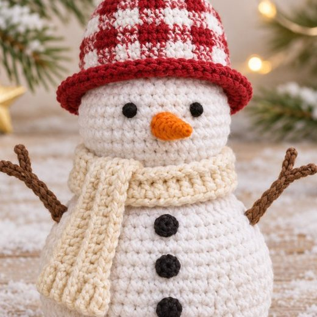
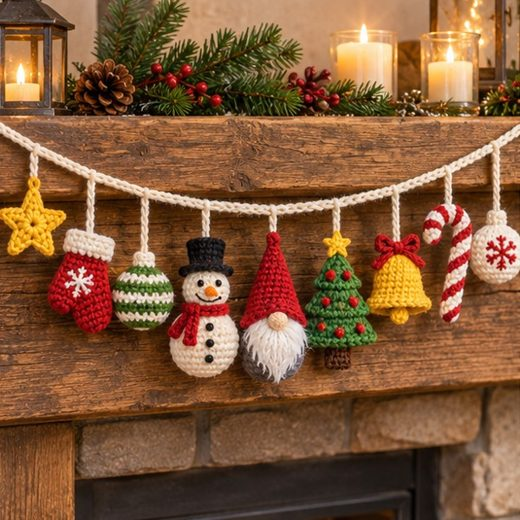

1. Countdown posterAll 24 days on one page, with a box to tick.
2. Yarn and shopping plannerYarn, colors and hook for every day, so you buy once.
3. Gift tags24 tags to cut out and tie to your ornaments.
4. Garland layout plannerPlan the order and spacing of the 23 pieces.
5. Make-it-another-size guideBall-shaped projects in five sizes, with yarn and rounds.
6. Fix-it guideThe most common problems in the book, with the fix.
Print at 100% on US Letter paper. The pages are for personal use. Yarn amounts and sizes are approximate.